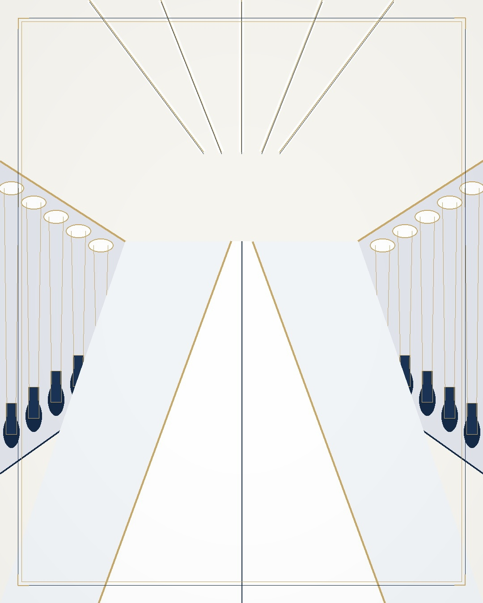

Custom Socks from Zhuji: Sports, Yoga, Compression
Sports socks, yoga socks, compression socks, casual knitwear, hats and gloves, made in the cluster that produces 30%+ of the world's socks. Custom patterns, Oeko-Tex standard materials, quoted per style.
Why this category comes from Zhuji
Zhuji makes 30%+ of the world socks
The hosiery cluster is inside Jinhua prefecture, which is why socks and knitwear are a same-day trip from our office rather than a remote region.
Knitting and finishing sit in the same cluster
Because the weaving and the finishing steps are local, a pattern change does not wait for a supplier chain to be re-planned.
We do not own a mill here
Oeko-Tex documents are issued to the mill or factory that produces the goods. We verify them per order.

What we can have made
Sports socks
Cushioned and technical styles for training and running.
Yoga socks
Grip and toe styles for studio use.
Compression socks
Graduated styles for travel and recovery.
Casual knitwear
Sweaters and knit tops in the same cluster.
Hats
Knit and woven headwear.
Gloves
Knit and touch-screen compatible styles.
Capability matrix
| Specification | Detail |
|---|---|
| Product types | Sports socks, yoga socks, compression socks, casual knitwear, hats, gloves |
| Materials | Oeko-Tex standard materials, confirmed per style |
| Customisation | Custom patterns, size sets, and packaging per style |
| Typical MOQ | 200 - 2,000 pieces, by style |
| Cluster | Zhuji, Jinhua - 30%+ of global sock production |
| Price | Quote on request, per style |
| Inspection | AQL 2.5 pre-shipment, with a photo report |
| Certificates | Held by the producing factory, verified per order |
What "custom" covers
Patterns are standard
Send the artwork and the size set you need. A specific yarn or construction is confirmed per style on the quotation.
Specification follows the style
Yarn, size set and packaging are fixed with the style you choose, not assumed in advance.
Seven categories, one partner
Socks and knitwear sit with six other categories on the all seven categories page.
Why there is no price list on this page
No published list price exists
A sock price moves with yarn, knitting method, size set and quantity. Nothing on this page pretends otherwise.
A shortlist in 48 hours instead
Send the artwork and quantity, and 3-5 factory matches come back with pricing within 48 hours. MOQs work the same way - see how MOQs are set.
Quality: AQL 2.5 before the container is booked
Pre-shipment inspection, with photos
AQL 2.5 inspection before the container is booked, with a photo report issued to you.
A failed lot does not ship
Goods stay with the factory until the failed points are corrected.
Certificates belong to the factory
Oeko-Tex and other documents are issued to the mill for specific materials. We check them against your order and send the copy before production.
Shipping: FOB Ningbo, CIF or DDP
Three terms, one port
FOB Ningbo, CIF or DDP, by sea, air or express.
Consolidation across the prefecture
Socks consolidate with the Yiwu-line categories, so one container can carry several product groups.
30+ countries served
Multi-factory orders are merged into a single shipment before departure.
Sourcing cycle: 48-hour shortlist, 7-day sourcing
48 hours to a shortlist
3-5 verified factory matches after your brief arrives.
7 days brief to quote
The average cycle from artwork to a priced shortlist.
24-hour reply
Every request is answered within 24 hours; lead times are confirmed per order in your quote.
Buyer questions
What is the MOQ for custom socks?
Typical factory minimums in this category run from 200 to 2,000 pieces per style, depending on the knitting method and the number of colourways. The MOQ for your style is confirmed on the quotation.
Can we order custom patterns or our own artwork?
Yes, custom patterns are standard. Send the artwork and the size set you need; feasibility for a specific yarn or construction is confirmed per style on the quotation.
Is the Oeko-Tex certificate yours or the factory's?
It belongs to the mill or factory that produces the goods, and it is issued for specific materials. We check it against your order and send you the copy before production starts.
How is quality controlled before shipment?
AQL 2.5 pre-shipment inspection with a photo report, issued before the container is booked. Production lead time is confirmed per order on the quotation, because it moves with the style and the factory schedule.
Get a quote for your specification
Tell us the product, the quantity and the destination port. We reply within 24 hours, and the sourcing service is free for buyers.
Other category guides: custom drinkware · custom jewelry · off-road electric motorcycles